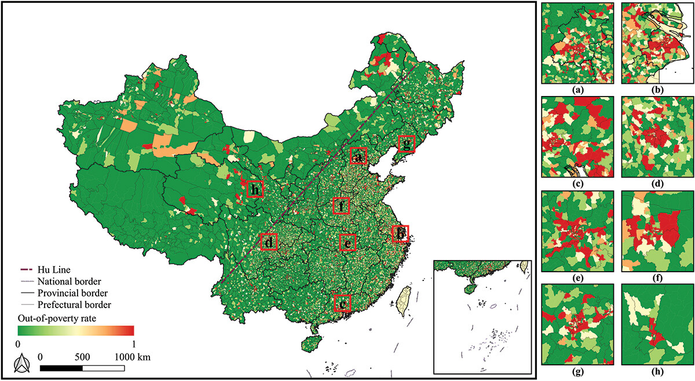
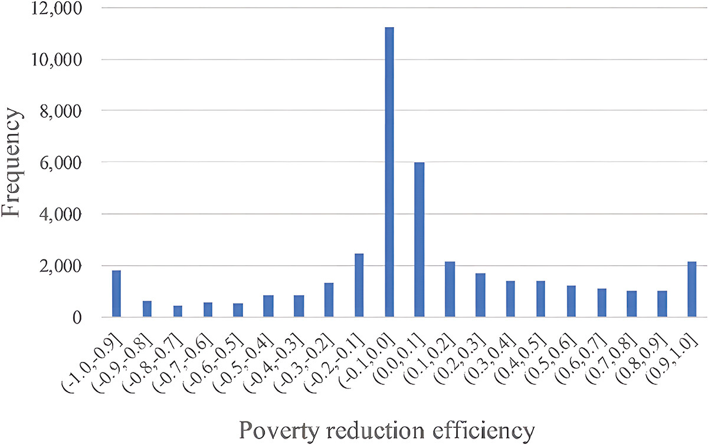
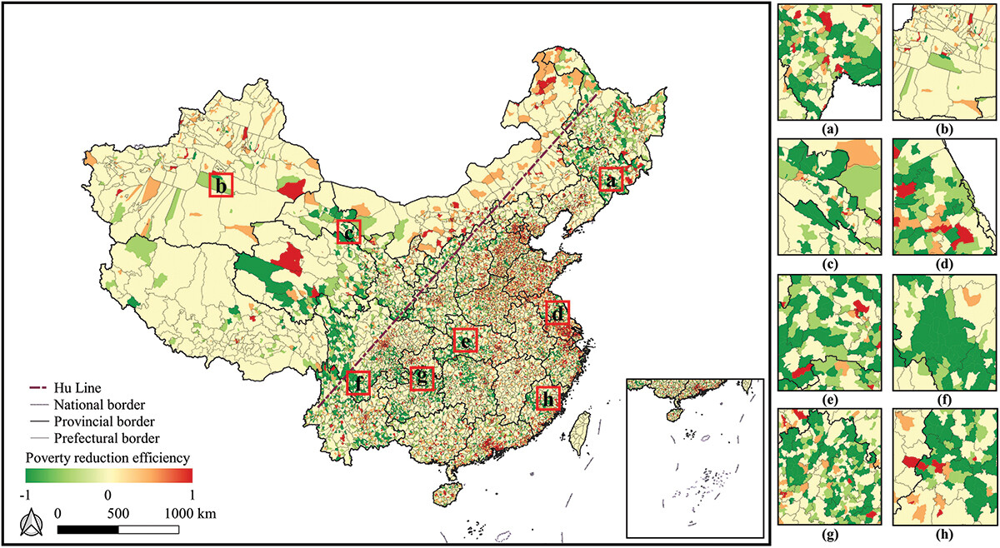
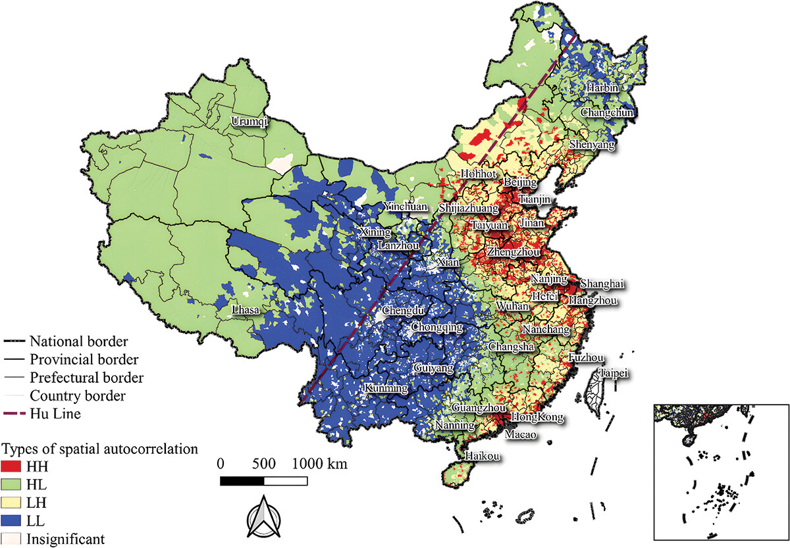
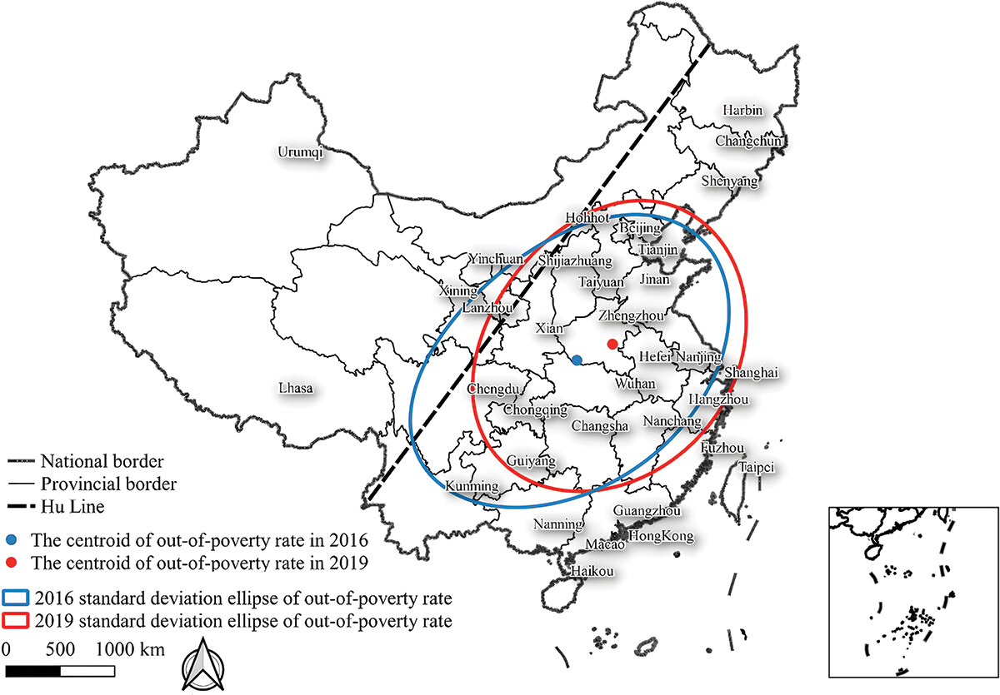
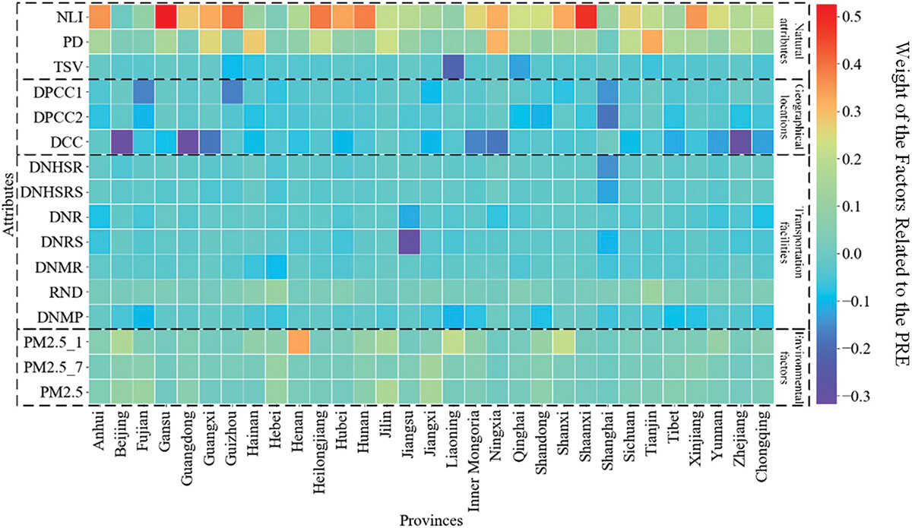

Poverty threatens human development especially for developing countries, so ending poverty has become one of the most important United Nations Sustainable Development Goals (SDGs). This study aims to explore China's progress in poverty reduction from 2016 to 2019 through time-series multi-source geospatial data and a deep learning model. The poverty reduction efficiency (PRE) is measured by the difference in the out-of-poverty rates (which measures the probability of being not poor) between 2016 and 2019. The study shows that the probability of poverty in all regions of China has shown an overall decreasing trend (PRE = 0.264), which indicates that the progress in poverty reduction during this period is significant. The Hu Huanyong Line (Hu Line) shows an uneven geographical pattern of out-of-poverty rate between Southeast and Northwest China. From 2016 to 2019, the centroid of China's out-of-poverty rate moved 105.786 km to the northeast while the standard deviation ellipse of the out-of-poverty rate moved 3 degrees away from the Hu Line, indicating that the regions with high out-of-poverty rates are more concentrated on the east side of the Hu Line. The results imply that the government's future poverty reduction policies should pay attention to the infrastructure construction in poor areas and appropriately increase the population density in poor areas. This study fills the gap in the research on poverty reduction under multiple scales and provides useful implications for the government's poverty reduction policy.
Poverty has been a major issue influencing human development. Existing literature on the assessment of poverty mainly focuses on the identification of poor areas and the evaluation of specific poverty reduction policies in small areas. The data are mainly based on administrative data and sampling questionnaires, which are costly and time-consuming. Due to privacy and data protection policies, such data is usually provided with low spatial resolution. With the development of big data and deep learning technology, it is now possible to mine the deep spatial semantic features of multi-source geospatial data, which have been widely used to assess regional economic growth.
Since the reform and opening up, China has made outstanding contributions to the world's poverty reduction efforts. According to the latest report, the number of people living in poverty in China dropped from 98.99 million at the end of 2012 to 5.51 million at the end of 2019, with the incidence of poverty dropping from 10.2% to 0.6%. However, regional differences in China's progress in poverty reduction and its scale effect are still unknown. Therefore, the evaluation of the progress in poverty reduction and the analysis of its driving forces in China under multiple scales have both theoretical and practical significance. This study uses Long Short-Term Memory (LSTM) network and Random Forest (RF) model to construct the prediction model of China's out-of-poverty rate, and evaluates the driving forces of PRE under multiple scales based on multi-source geospatial data.
The study area is China's mainland (excluding Hong Kong, Macau and Taiwan), including 31 provincial administrative regions, 336 city administrative regions, 2,819 county administrative regions, and 41,263 township administrative regions. Following the economic data released by the government, this study marks the absolute poverty areas and absolute out-of-poverty (rich) areas in China at the township scale (the absolute out-of-poverty areas were marked as 1, and the absolute poverty areas as 0). A total of 7,335 absolute poor areas and 1,094 absolute out-of-poverty areas were marked in 2016, and a total of 6,260 absolute poor areas and 1,094 absolute out-of-poverty areas were marked in 2019.

The data used in this study includes social media data and multi-source geospatial data. There are 16 kinds of multi-source geospatial data with a unified resolution of 1 km × 1 km, including nighttime light index (NLI), population density (PD), terrain slope value (TSV), distance to provincial capital city (DPCC1), distance to prefectural city center (DPCC2), distance to county center (DCC), distance to the nearest high-speed railway (DNHSR), distance to the nearest railway (DNR), distance to the nearest high-speed railway station (DNHSRS), distance to the nearest railway station (DNRS), distance to the nearest main road (DNMR), road network density (RND), January PM2.5 concentration (PM2.5_1), annual PM2.5 concentration (PM2.5_7), July PM2.5 concentration (PM2.5), and distance to major ports (DNMP). All data were normalized, ranging from 0 to 1.
| Data | Format | Year | Resolution | Source |
|---|---|---|---|---|
| List of poor counties and rich counties | Txt | 2016, 2019 | — | cpadis.cpad.gov.cn |
| Traffic data | Shp | — | — | openstreetmap.org |
| Night light data | GeoTiff | 2000–2012 | 1 km | ngdc.noaa.gov |
| PM2.5 | GeoTiff | 2016 | 30 m | weather.com.cn |
| DEM | GeoTiff | — | 30 m | gscloud.cn |
| Population data | Txt | 2010 | — | stats.gov.cn |
Social media data in this study refers to the Real-time Tencent User Density (RTUD) data in 2016 and 2019, which was collected through the Application Programming Interface (API) provided by the Tencent EasyGo application. The RTUD data includes the 24-hour average user density in three different periods including weekends, workdays and legal holidays at a resolution of 1 km × 1 km. Tencent users account for more than 90% of the total Chinese population. Based on the findings of Deville et al. (2014), the population data within each region is calculated from social media data by combining census data, enabling the current-moment population to be derived from RTUD.
The method flowchart of this study is illustrated in the teaser figure above (Fig. 3). It shows how the PRE was evaluated based on multi-period Tencent time-series population data and deep learning.
The out-of-poverty rate prediction is the premise of the PRE evaluation. The principle of this method is to construct a semi-supervised model based on the marked data and extract the economic characteristics of the targeted population based on the spatiotemporal attributes of RTUD. The poverty fitting procedure consists of two parts: pretreating the time-space dimension of the RTUD, and constructing the poverty fitting model based on LSTM and RF (LSTM-RFA).
First, coordinate correction, data cleaning, mean spatial filtering, and time-dimensional compression (up to 1 hour) are performed on the original RTUD data. The preliminary data are obtained through zonal statistics at the district scale and kilometer grid scale. The population size and age structure of the preliminary data are then corrected to near-real population based on the 2010 national census data. The RTUD semi-supervised spatiotemporal data are formed by associating them with the rich and poor marked data.
The model constructs two LSTM layers and a fully connected layer, which reduces the time dimension of the RTUD semi-supervised spatiotemporal data to extract the high-dimensional semantics of the population distribution. Then, the temporal features of high-dimensional semantics are classified by the RF to calculate the dichotomous probability of poverty or out-of-poverty. LSTM effectively solves the vanishing gradient problem in RNN training, while the RF has high classification accuracy and robustness against overfitting.
In this study, the out-of-poverty rate of each region is predicted based on the out-of-poverty rate prediction model, and the difference between the predicted probability values in 2019 and 2016 is used as the PRE:
$$ T = P_{2019} - P_{2016} $$
where \(T\) is PRE, and \(P_{2019}\) and \(P_{2016}\) are the out-of-poverty rates in 2019 and 2016, respectively. The population-weighted average PRE is calculated as:
$$ \bar{T} = \frac{\sum_{i=1}^{n} T_i W_i}{\sum_{i=1}^{n} W_i} $$
where \(\bar{T}\) is the weighted average PRE, and \(T_i\) and \(W_i\) are the PRE and population in region \(i\), respectively. To analyze spatial distribution and statistical characteristics, Moran's I index, Getis-Ord Gi* index, and Local Indicators of Spatial Association (LISA) were introduced.
The values of each spatial factor were taken as independent variables, and the RF fitting function was used to fit the PRE. The study extracted the high-dimensional semantics of population distribution corresponding to each pixel in RTUD data based on LSTM as the input of the model, and used the tagged pixel value (rich and poor) as the output. The RF-derived weights of different predictors reveal the relative importance of each factor in driving PRE, which can be used for modifying future policy and improving PRE in China.
The difference between the predicted values of the model in 2019 and 2016 is taken as the PRE. The population-weighted average PRE is 0.264 in China, indicating that China's overall progress in poverty reduction from 2016 to 2019 is significant. However, district-level statistical areas with negative PREs account for 50.167% of all the research areas, which indicates that there are regional differences and inequity in the progress in poverty reduction.

The PRE decreases gradually from east to west, and the spatial heterogeneity is obvious. The PRE at the district level is high in eastern China but low in southwestern China. The areas with high PRE are mainly concentrated in major urban agglomerations, such as the Beijing-Tianjin-Hebei urban agglomeration, the Yangtze River Delta, the Guangdong-Hong Kong-Macao Greater Bay Area, the Chengdu-Chongqing urban agglomeration, the Yangtze River urban agglomeration, the Zhongyuan urban agglomeration, and the Guanzhong Plain urban agglomeration.

At 95% confidence, most areas in China are LL (low value cluster) type or HH (high value cluster) type. The autocorrelation types on the whole show an HH-LH-HL-LL transition from the southeast to the southwest. The HH type research areas are mainly distributed in the northwestern, northern and coastal regions in northern China, while the LL type research areas are primarily distributed in the southwestern, central and northeastern China. Major cities in southeastern and northern China and their surrounding areas are HH types since they have been developing for a long time and have frequent population and resource flows with surrounding areas. However, the major cities in northeastern and southwestern China are HL types while their surrounding areas are LL types, because these cities mainly attract the surrounding areas' populations and resources to promote their own development.

By comparing the distributions of out-of-poverty rates between 2016 and 2019, it can be found that there were more areas with high out-of-poverty rates to the east and less to the west of the Hu Line. On the west side of the Hu Line, the out-of-poverty rate decreased; while on the east side of the Hu Line, the out-of-poverty rate increased. In 2019, almost all regions with high out-of-poverty rates appeared on the east side of the Hu Line.

Gravity analysis reveals that the center of gravity of China's out-of-poverty rate moved 105.786 km to the northeast from 2016 to 2019. Compared with 2016, the standard deviation ellipse of the out-of-poverty rate moved 3 degrees away from the Hu Line, indicating that the gap between the two sides of the Hu Line has been further widened. The increase of the short-axis length of the SDE indicates that the overall out-of-poverty rate increased, while the decrease of the ellipticity indicates that regions with high out-of-poverty rates are becoming more concentrated in the east.
| Centroid Lon. | Centroid Lat. | Ellipse Direction | Minor Axis Change | Major Axis Change | |
|---|---|---|---|---|---|
| 2016 | 111.844° | 32.651° | 65.526° | +5.774% | −13.924% |
| 2019 | 114.501° | 33.340° | 62.555° | — | — |
The association between multisource spatial attributes and the PRE was investigated using the RF model. Among all 16 attributes, 6 were positively correlated with the PRE, including PM2.5, PM2.5_7, PM2.5_1, PD, NLI, and RND. This indicates that the degree of industrialization, population size, population activity level, economic activity, and transportation convenience are positively associated with poverty reduction.
| Attribute | Weight | Attribute | Weight |
|---|---|---|---|
| DNMR | −0.024 | PM2.5 | +0.048 |
| RND | +0.025 | TSV | −0.052 |
| DNR | −0.032 | PM2.5_7 | +0.052 |
| DNRS | −0.033 | PM2.5_1 | +0.057 |
| DNHSR | −0.033 | DNMP | −0.058 |
| DNHSRS | −0.034 | DCC | −0.059 |
| DPCC2 | −0.040 | PD | +0.109 |
| DPCC1 | −0.042 | NLI | +0.304 |
Among all attributes, NLI shows the strongest positive correlation with PRE (+0.304), indicating that the level of social and economic activity contributes most to poverty reduction. PD (+0.109) is the second strongest positive factor, reflecting the role of population density. DCC (−0.059) and DNMP (−0.058) are the most negative factors, indicating that greater distance to county centers and major ports hinders poverty reduction. Provincial-level analysis further confirms that the top three provinces most influenced by NLI and PD (Shanghai, Beijing and Jiangsu) had the highest PREs, with their average PREs being 2.157 times the national average.

The PRE distribution has a tendency to decrease from east to west, and most provinces in the west are below the national average. At the city level, cities with high PREs are mainly in the coastal areas of Southeast China, North China, the southern part of the northeast, and the capital cities. At the province level, the PREs of Beijing, Tianjin, Jiangsu, Zhejiang, Fujian and Guangdong are all higher than 0.300, which is 1.899 times higher than the national average. At the district level, although most districts in capital cities have high PREs, their surrounding districts have low PREs, which is consistent with the "core-periphery" model indicating that a rapidly developing core region may absorb human resources and raw materials from surrounding areas.
The standard deviation ellipse analysis reveals that the centroid of China's out-of-poverty rate moved 105.786 km to the northeast from 2016 to 2019, while the SDE moved 3 degrees away from the Hu Line. This finding suggests that the inequity of PREs among different regions in China has been strengthened over this period. Due to the urban agglomeration effect, population resources and production resources are concentrated in large cities on the east side of the Hu Line, enabling local governments to invest more in poverty alleviation. Conversely, districts on the west side are influenced by poor physiographic conditions, population loss, and poor infrastructure, forcing governments to invest more in basic conditions rather than poverty alleviation.
The weights of NLI and PD are high in most regions at both the province and city levels, indicating their importance as factors affecting the PRE. The positive contributions of NLI and PD can be explained by "agglomeration economic effects," which highlight the importance of industrial agglomeration and population density for regional development. Distance to urban centers and transportation facilities are negatively associated with PRE because greater distances mean higher transportation costs, which may discourage businesses from investing in poor areas.
Several limitations should be noted. First, this study uses a probability index to calculate the PRE, which may not measure poverty precisely; future studies should consider alternative poverty indicators such as the multidimensional poverty index. Second, the geographical units are not at a fine scale; future studies could collect data at the neighborhood level. Third, causal inference between predictive factors and poverty was not established; future research may apply new methods for investigating the causality relationship.
This study uses LSTM and RF to investigate the PRE in China by mining the correlation between Tencent RTUD data and regional out-of-poverty rates, and explores the driving forces of the PRE under multiple scales. The main findings are:
@article{Yao03072024,
author = {Yao Yao and Jianfeng Zhou and Zhenhui Sun and Qingfeng Guan and Zhiqiang Guo and Yin Xu and Jinbao Zhang and Ye Hong and Yuyang Cai and Ruoyu Wang},
title = {Estimating China’s poverty reduction efficiency by integrating multi-source geospatial data and deep learning techniques},
journal = {Geo-spatial Information Science},
volume = {27},
number = {4},
pages = {1000--1016},
year = {2024},
publisher = {Taylor \& Francis},
doi = {10.1080/10095020.2023.2165975},
URL = {https://doi.org/10.1080/10095020.2023.2165975},
eprint = {https://doi.org/10.1080/10095020.2023.2165975}
}
本文内容由 DeepSeek-V4 Pro AI 自动总结生成，仅供参考。详细信息请以原文为准。
Content on this page is AI-summarized by DeepSeek-V4 Pro. Please refer to the original publication for authoritative information.